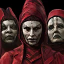
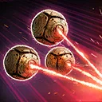
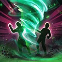
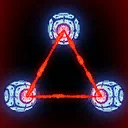

Great Mothers
A trio of mysterious Supports who wield the threads of fate and destiny to doom their enemies and bless their allies

A trio of mysterious Supports who wield the threads of fate and destiny to doom their enemies and bless their allies

Deal Special damage to target enemy. If the target enemy was Doomed, inflict Tenacity Down for 2 turns and they lose 20% Max Health (stacking, excluding Galactic Legends and Raid Bosses) until the end of the encounter, which can't be evaded or resisted. Otherwise, inflict Ability Block and Speed Down for 2 turns.
Blessed allies gain Foresight for 2 turns, and non-Tank Blessed allies gain Stealth for 1 turn.

If the enemy Leader is Light Side, dispel all debuffs on all Nightsister allies. Dispel all buffs from all enemies and Doomed enemies are inflicted with Vulnerable for 2 turns. Deal Special damage 3 times to all enemies. If this attack defeats an enemy, all Nightsister allies gain Defense Penetration Up for 2 turns.

Nightsister allies gain 30% Defense, Max Health, and 30 Speed. If all allies are Nightsister at the start of battle, at the start of each encounter and end of each turn, if there are no enemies inflicted with Doomed, Great Mothers removes Ability Block from themselves, gains the granted ability Fate Weaving, and takes a bonus turn. During this bonus turn, Great Mothers can only use Fate Weaving. Great Mothers can't use Fate Weaving two times in a row. If the enemy Leader is Light Side, dispel Stealth and ignore Taunt effects while using Fate Weaving.
If all allies are Nightsister at the start of battle, at the end of each turn, if there are no other allies with Blessed, Great Mothers removes Ability Block from themselves, gains the granted ability Gift of Shadows, and takes a bonus turn. During this bonus turn, Great Mothers can only use Gift of Shadows. Doomed enemies can always be targeted by Blessed allies and Great Mothers.
Fate Weaving: Target enemy is inflicted with a stack of Damage Over Time for 1 turn and Doomed for the rest of the encounter, which can't be copied, dispelled, or resisted.
Doomed: Protection is disabled and can't Stealth; lose 20% Max Health whenever this character ends their turn until the end of the encounter; can't revive (raid bosses and Galactic Legends: -5% Defense)
Gift of Shadows: Target other Nightsister ally gains Blessed for the rest of the encounter or until defeated, which can't be copied, dispelled, or prevented.
Blessed: +20% Max Health and Offense; immune to instant defeat effects, Stun, and turn meter reduction; assist whenever another Nightsister ally uses a Special ability on their turn, dealing 40% less damage
Omicron Boost : While in Territory Wars: Nightsister allies gain 30% Defense, Max Health, and 20 Speed. Great Mothers gain Instant Defeat Immunity while a Blessed ally is active. Doomed enemies have -30% Defense and Offense. Whenever a Doomed enemy is defeated, all enemies are inflicted with Fear for 1 turn.
Target enemy is inflicted with a stack of Damage Over Time for 1 turn and Doomed for the rest of the encounter, which can't be copied, dispelled, or resisted.
Doomed: Protection is disabled and can't Stealth; lose 20% Max Health whenever this character ends their turn until the end of the encounter; can't revive (raid bosses and Galactic Legends: -5% Defense)
Target other Nightsister ally gains Blessed for the rest of the encounter or until defeated, which can't be copied, dispelled, or prevented.
Blessed: +20% Max Health and Offense; immune to instant defeat effects, Stun, and turn meter reduction; assist whenever another Nightsister ally uses a Special ability on their turn, dealing 40% less damage
Nightsister allies gain 30% Accuracy, Max Health, and Tenacity, but can't be revived. This effect persists through defeat. At the start of each encounter and whenever an Attacker Nightsister ally or Great Mothers is critically hit, Attacker Nightsister allies gain Foresight and Stealth for 1 turn (limit once per turn).
Whenever an enemy is critically hit, Great Mothers and all Blessed allies gain 1% Offense (stacking) for 2 turns and recover 2% Protection, doubled if the enemy had Vulnerable. Whenever a Vulnerable enemy starts its turn, all Nightsister allies gain Foresight for 2 turns, and all non-Tank Nightsister allies gain Stealth for 1 turn. Whenever a Doomed enemy gains Turn Meter, Blessed allies gain 25% Turn Meter (limit once per Doomed enemy's turn).
Omicron Boost : While in Territory Wars: Whenever a Vulnerable enemy is critically hit, Great Mothers and Blessed allies gain 5% Turn Meter. The first time any other Nightsister ally is reduced to 1% Health:
-Dispel all debuffs on themselves
-Gain Blessed for 2 turns if they didn't already have it, which can't be copied, dispelled, or prevented, and Damage Immunity for 1 turn, which can't be copied
-Recover 100% Health and Protection, and have their cooldowns reset
-They are defeated when Blessed is removed. If they were already Blessed, they have +200% Health Steal and gain 20% Defense and Offense
-This effect can happen once per battle
This character can't be used in the ally slot or with another large character and summons are prevented for allies.